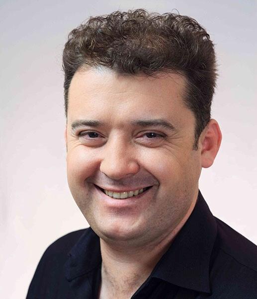

Денис Роднянский Вадимович
Еще в ранние годы биографии Денис Роднянский понял, что хочет заниматься творчеством, и сумел
найти призвание в кино. Хотя он всегда мечтал о роли харизматичного злодея, актер полюбился
зрителям образами положительных персонажей из украинских фильмов и сериалов.
Про детство и юность:

Денис Роднянский появился на свет 9 декабря 1981 года в городе Донецке. Он является украинцем по
национальности и с детства воспитывался в любви к родине и народным традициям. Уже тогда мальчик
демонстрировал интерес к творчеству, и родители не стали препятствовать желанию сына делать
карьеру в киноиндустрии.
Роднянский получил образование в Киевском университете театра, кино и телевидения имени Ивана
Карпенко-Карого, где учился на режиссерском факультете. Еще в студенческие годы он снял свой
первый короткометражный фильм, который назывался «Учитель пения». Ролик был отмечен дипломом
Московского фестиваля ВГИКа и представлен на Международном Каннском видеофестивале в 2003 году.
После этого Денис решил повысить квалификацию и окончил Высшие курсы сценаристов и режиссеров,
где занимался у Владимира Фокина и Аллы Суриковой, но в этот период звезду все больше увлекала
актерская работа.
О фильмах:
Свою экранную карьеру Денис начал еще в молодости. Он дебютировал в 2003 году в
русско-украинском сериале «Завтра будет завтра», где воплотил Петра Панченко. После этого артист
пополнил фильмографию такими проектами, как «Леди Мэр» и «Веселая компания», играя небольшие
роли.
Но уже в 2006 году артисту выпала возможность воплотить главного героя украино-эстонской
«Прикольной сказки». Сюжет фильма объединяет сказочный и современный миры, даря зрителям
поучительную историю о том, как важно любить ближнего и бороться за счастье вместо того, чтобы
сетовать на судьбу.
Эта работа привлекла к исполнителю внимание публики и режиссеров, и вскоре он был принят в
актерский состав 1-го сезона сериала «Сваты». Артист сыграл Максима Ковалева, но позже ушел из
проекта, а на его место взяли Даниила Белых.
Роднянский не стал горевать, ведь уже в 2012 году ему предложили главную роль в мелодраме
«Невеста моего друга». Персонаж звезды, Александр Купцов, делает предложение своей коллеге
Лидии, даже не подозревая, что девушка была в отношениях с его другом и дала согласие на брак,
поскольку устала ждать от любимого серьезного шага. По мере развития сюжета героям приходится
столкнуться не только с драматичными, но и с комичными ситуациями, чтобы обрести счастье.
Но прорывом для Дениса стало утверждение на второстепенную роль в 1-м сезоне сериала «Пес», где
он составил компанию Никите Панфилову, Михаилу Жонину и Ольге Олексий. Проект о харизматичном
сыщике и его умном псе настолько полюбился публике, что позже неоднократно получал продолжение и
транслировался не только в Украине, но и в России на НТВ.
Хотя после начала работы над «Псом» Роднянский неоднократно пополнял копилку образов, снимаясь в
картинах «На линии жизни», «Радуге в небе» и «Послушной жене». Его другой звездной ролью стал
Гений из сериала «Выходите без звонка». По сюжету герой исполнителя — социопат и затворник, но
при этом талантливый компьютерщик и хакер, который помогает другу в расследовании преступлений.
Как признался Роднянский в интервью, когда родные увидели его в этом образе на экранах, то
заметили, насколько сильно персонаж не похож на самого актера. Но Денис стремится пробовать себя
в разных образах, проживая жизни своих героев. Не удивительно, что ему легко удалось оживить
Гения и сделать любимчиком зрителей, которые захотели увидеть звезду в следующих сезонах.
О Денисе сейчас:
В 2020 году артисту пришлось столкнуться с трудностями из-за пандемии коронавирусной инфекции,
но он не стал скучать на карантине и посвятил освободившееся время общению с поклонниками. Денис
часто радовал аудиторию эфирами в «Инстаграме», которые проходили с участием его знаменитых
коллег, и записывал развлекающие видео.
А уже в начале лета Роднянский опубликовал фото со съемочной площадки «Пса-6» и сообщил о начале
работы. Позже он также приступил к созданию 4-го сезона «Выходите без звонка». Увидеть 3 часть
сериала зрители смогли только в сентябре, но были счастливы узнать о предстоящем продолжении.
Сейчас актер продолжает свою экранную карьеру. Он охотно дает интервью и делится с поклонниками
дальнейшими планами.